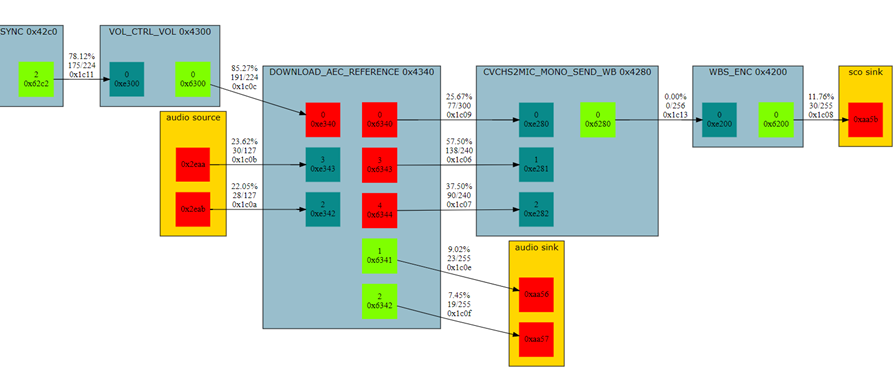

How to Use KSP¶
Before using KSP, the following considerations should be taken into account:
Only one instance of the KSP tool can be used on any single target.
KSP supports up to two streams, up to four channels each.
The following buffers are not supported:
Any transforms that the reader writes into the buffer.
Remote buffers. These are buffers in another sybsystem’s RAM and connecting the Audio subsystem with another subsystem. These buffers are not shown in the audio chain graph. Example of these buffers are
Apps->A2DPandHW->MIC, which areMMU Audio Muxbuffers.
Find transform IDs using ACAT¶
To sniff a transform in an audio graph, KSP needs to know the transform identifier of the connection. ACAT is used to find transform identifiers.
To find those identifiers using ACAT, follow the steps below:
Connect ACAT to a live chip that is running the audio application. It can be used within the Qualcomm MDE from the ACAT tab or by opening it independently with the
-iand-dparameters. The-iis the option for the interactive mode and-dis for dual core.
Use
stream.create_graph_img()in ACAT (graphvizinstallation is needed). Alternatively, usestream.analyse_transforms()that lists the transforms. To get the transform buffers on the processor 1, usep1.at the beginning of the command. For example:p1.stream.create_graph_img()will display the audio chain on the processor 1.Transform IDs are printed above the connection lines in
graphvizgraphs.
Group interested channels into streams.
All channels for a stream must be on the same processor. Mixing channels across processors is an invalid configuration and KSP does not support them.
All channels in a stream must be synchronized. this means that channels must produce audio at the same midterm average rate so that KSP sniffing for the stream does not stall.
Note
Multiple outputs of one operator are usually synchronized, but not
always, as for example, AEC_REFERENCE speaker outputs are not
synchronized to microphone outputs.
Sniffing hardware channels¶
KSP sniffs channels that are associated with connection transforms.
MMU buffers that are used by endpoints to read/write audio from/to hardware are not sniffable in KSP. The exception is MMU buffers of endpoints that are overridden by operators like
AEC_REFERENCEwhere those buffers are exposed through transforms. For example0x1c0eand0x1c0fin above figure.Buffers that are shared with application subsystem are not sniffable. For example, A2DP input or USB RX/TX buffers.
SCO MMU buffers can be sniffed as they are associated with the connection between SCO endpoints and SCO operators. For example
0x1c08in above figure.
Multi channel KSP streams¶
KSP streams and channels enable sniffing multiple transform buffers in a single run of KSP. It can sniff up to four channels in each stream. All channels in a KSP stream must be synchronized and be on the same processor.
Examples:
A resampler or
RATE_ADJUSToperator always produce the same amount of data for all of its output channels, so all the output channels can be grouped into a KSP sniffing stream, however its input and outputs cannot be in the same stream as they do not have the same rate.In a Source Sync operator, the amounts of consumed input and produced output are normally equal. However it sometimes discards input or inserts silence. Therefore, its input and output cannot be grouped into the same KSP stream.
Starting the KSP command-line interface¶
After the KSP installation, all the executables such as ksp.exe and
ksp_extract.exe are available from the Scripts folder in the
virtual environment.
ksp.exe trb:scar -f <PATH TO THE APPS1 FIRMWARE>
Use -h or --help for all optional flags.
Note
If more than one TRB interface is connected and the exact address of TRB is
not specified, for example only scar is given, KSP prompts for which one
to use.
Commands¶
To see all the available commands, use help. To see a more detailed
explanation of each command, use the help <command>.
(ksp_env) <CURRENT PATH>> ksp.exe trb:scar -f <PATH TO THE FIRMWARE> Device attach succeeded. Using TRB clock speed: 70MHz. Welcome to Kymera Stream Probe (KSP) CLI! To get the list of commands typel `help`. For command helps use `help [COMMAND]`. Use `exit` command to quit. KSP> help Documented commands (type help <topic>): ======================================== config config_stream exit [and other commands] KSP>
Configuration¶
To begin sniffing data, the tool must first be configured. The configuration is handled using an assortment of commands in the CLI.
To view the current configurations, use config command:
KSP> config
Current Configurations:
Output Filename: temp/my_output
Streams :
0:
Buffer Size : 0
Data Type : PCM16
Processor : 0
Transform IDs: 0x1c16 0x1c17
1:
Buffer Size : 1024
Data Type : PCM16
Processor : 1
Transform IDs: 0x1c19
KSP>
Configure Streams¶
KSP supports the configuration of up to two streams. To configure each
stream, issue config_stream with the stream number as parameter, which can
be 0 or 1. For example:
KSP> config_stream 0
The command config_stream 0 starts the configuration procedure of the
stream 0.
Description of attributes: Each stream requires values for the following attributes:
Data Type: Accepted values are
DATA16,PCM16,PCM24,PCM32,DATA32andTTR.
Type
Value
Transmits/Size
Suitable for
DATA16
0
Lower 16 bits (2 octets) 16-bit encoded channels
PCM16
1
Upper 16 bits (2 octets) linear PCM audio channels
PCM24
2
Upper 24 bits (3 octets) linear PCM audio channels
PCM32
3
Upper 32 bits (4 octets) linear PCM audio channels
DATA32
4
Lower 32 bits (4 octets) 32-bit encoded channels
TTR
5
Lower 32 bits (4 octets) 32-bit encoded channels
Reserved: 6 and 7 [might be used in future for extending the packet protocol].
In Qualcomm CDA chips DATA32 is the same as PCM32, but is useful when extracting data).
Enable Metadata: This option is only available to
TTRstreams. When it is enabled, KSP records metadata as well.Transform IDs: Space separated IDs in hex. i.e.
0x1C16. Besides a list of transform IDs,TTRcan also acceptnoneorallvalues. If IDs are given, all the Transform IDs must be on the same processor.Samples: Accepts a number from 1 to 256. KSP rounds up any given number to a multiple of 8. For example, if the given number is 21, KSP uses 24. The default value is 0, which means the audio firmware decides what to set.
Sample Rate: It is configurable for
PCMdata types. The value is a number from 8000 to 192000. The default value is 0. KSP produces the output as described:
Sample Rate configuration VS the output¶ Data type
Sample Rate
Output format
TTR
Not Applicable
Per channel RAW data file.
Any DATA
Not Applicable
Per channel RAW data file.
Any PCM
Specified
Per stream multichannel WAV file.
Any PCM
0
Per stream multichannel RAW file.
Timed Data: Hex ID of an endpoint or terminal, or 0 to disable. This option is only available to
TTRstreams. When enabled, a low resolution version of the data written is recorded as part of theTTRtraces. Supported types are operator output terminals and audio sink endpoints. The former also works when the operator output is part of an in-place chain. For the latter, data written to the hardware buffer is recorded. This data is suitable for visual indication in the KTTR Viewer tool, not for audio quality assessments.Buffer Size: The size of the internal buffer in words for the stream. It must be a positive integer from 0 to 16384. The default value is 0, which means Kymera will decide what is the best size for the most use cases. This feature is only available to downloadables with the version 1.3 or higher.
Processor: The processor number to sniff data from. The value can be either
0or1.
Example: The following code shows an example of how to configure stream 0:
KSP> config_stream 0
Data Type: PCM16
Transform IDs (Space separated IDs): 0x1c16 0x1c17
Samples [0]: 128
Sample Rate [0]: 8000
Buffer Size [0]: 200
Processor [0]: 1
KSP> config
Current Configurations:
Output Filename:
Streams :
0:
Buffer Size : 200
Data Type : PCM16
Processor : 1
Sample Rate : 8000
Samples : 128
Transform IDs : 0x1c16 0x1c17
KSP>
When the requested stream is already configured in the application, the config_stream command tries to reconfigure the stream. In this case, default values are those existing old values, for example:
KSP> config_stream 0
Data Type [PCM16]:
Transform IDs (Space separated IDs) [0x1c16 0x1c17]: 0x1c16 0x1c1b
Samples [128]: 104
Sample Rate [8000]:
Buffer Size [200]:
Processor [1]: 0
KSP> config
Current Configurations:
Output Filename:
Streams :
0:
Buffer Size : 200
Data Type : PCM16
Processor : 0
Sample Rate : 8000
Samples : 104
Transform IDs: 0x1c16 0x1c1b
KSP>
Set the Output Filename¶
KSP needs to know where to save the output. The command which sets the
output path is set_output_filename, which takes the absolute/relative
path as a parameter, for example:
KSP> set_output_filename C:\My Output\test
KSP> config
Current Configurations:
Add Date-Time to the Output Filename: True
Output Filename : C:\My Output\test
Streams :
Use the built-in capability : False
If the extension of the output filename is not set, KSP will add .lrw
extension automatically to the end of the filename.
Note
When setting the output file and address, do not use single (') and double
(") quotes unless they are part of the path. For example, "C:\My
Output\test" does not work.
Add Date and Time to the output filename¶
By default, KSP adds the date and the time of the recording to the filename.
To change this, use add_datetime_to_filename command. The expected
parameter for this command is one of the strings true and false.
KSP> add_datetime_to_filename false
KSP> config
Current Configurations:
Add Date-Time to the Output Filename: False
Output Filename : C:\My Output\test
Streams :
Use the built-in capability : False
Use the KSP Built-in Capability¶
Some chips benefit from having KSP Capability built into the silicon. For these
cases, the user can enable the built-in capability option by using
use_builtin_cap command. The expected parameter for this command is string.
The value is case insensitive and can be either true or false. When KSP
first starts, the default value is false.
KSP> use_builtin_cap true
KSP> config
Current Configurations:
Add Date-Time to the Output Filename: True
Output Filename : C:\My Output\test
Streams :
Use the built-in capability : True
Start and Stop¶
The start command starts the sniff operation. A user can watch the
live progress on the screen during this process. To stop the process,
press Enter.
On the termination, extra information is displayed and the CLI gives control back to the user, for example:
KSP> start
Connected to device:scar:0.
Trb link reset: retrying access
KSP downloadable file found, index=14.
KSP bundle is loaded.
Operator ID: 0x4800
Press Enter to stop the prob.
Bytes written to the output file: 540680
<-- ENTER is pressed here! -->
Streams:
stream0:
channels: 2
total_samples: 141024
packets: 1469
samples_in_packet: 96
data_type: PCM16
Headers:
stream0:
channels: 2
data_type: PCM16
KSP>
During the reading process, user can issue Ctrl+C interruption and
terminate the reading. In this case, no further processing will take
place and the downloadable will be unloaded. Where it is needed, user can
use the extract tool to do the extraction on the generated LRW file.
Note
If the KSP operator is already being configured and is running with
start_op, the start command will stop the running operator, unload
the downloadable, and do all the re-configuration steps again.
Manually Start and Stop the probe¶
To have more control over the end to end probe process, it is possible to
do steps in the start command manually. All the required commands in
the console are:
start_op: Start the KSP operator based on the stream(s) configurations.stop_op: Stop the KSP operator, when it is running.start_reader: Establish the connection to the chip and retrieve the data. It saves the data in a file that is defined in the configuration.
The format of the output file is lrw. To extract more information from
this file, use KSP Extract Script.
Non-interactive operation¶
KSP can run non-interactively with the --batch option. For example:
ksp.exe trb:scar:123456 -f <PATH TO THE APPS1 FIRMWARE> -b -o test.lrw -s 0:pcm16:tr=0x1c10:fs=48000:proc=1 -d 3 Device attach succeeded. Using TRB clock speed: 40MHz. Configuration: Output Filename: test.lrw Streams : 0: Buffer Size : 0 Data Type : PCM16 Processor : 1 Samples : 0 Stream : 0 Transform IDs : 0x1c10 INFO: Connected to device:scarlet:123456. INFO: KSP downloadable file found, index=8. INFO: KSP bundle is loaded on P0. Run for 3 seconds... Bytes written to the output file: 49160 Streams: headers_filename: test_headers.txt stream0 : channels : 1 data_type : PCM16 filenames : ['test_stream0_1channels_TTR.raw'] packets : 251 samples_in_packet: 96 total_samples : 24096
The invocation options are:
trb:scar:<serial_number>:If more than one TRBI adapter is connected to the host, the serial number should be specified as part of the device string. Otherwise KSP will prompt to select one of the available adapters.
-b,--batch:Run non-interactively.
-oOUTPUT_FILE_NAME,--outputOUTPUT_FILE_NAME:Specify the output file name. Required in non-interactive mode.
-s<stream_config>,--stream<stream_config>:Configure a stream. The argument is of the form:
<stream_number>:<data_type>:<key>``=``<value>:…In non-interactive mode, at least one stream configuration is required. The values are the same as for interactive configuration, only the transform ID list is comma-separated instead of space-separated. The keys are:
Key
Description
trTransform ID list, comma separated. Default for
TTRstreams isall, for other stream types this key-value pair is required.
fsSampling rate for
PCMstreams, default 0
bsBuffer Size in words, default 0
samplesPacket size, default 0
md,metadataFor
TTRstreams, enable recording metadata tag info. The value can beyorn, or can be omitted, that is equivalent toy.
td,timed_dataFor
TTRstreams, record low resolution data written by an operator terminal or an endpoint.
procProcessor number. The value can be
0or1.
-d<seconds>,--duration<seconds>:Record for the given number of seconds. The recording can also be stopped earlier by pressing
Ctrl-Cif run from a console or terminal. Either--durationor--wait_inputis required in non-interactive mode.
-w,--wait-input:After starting the recording, wait for the
Enterkey to be pressed (or a new line to be sent to stdin, if not run in a console or terminal) to stop. This is the same behaviour as in interactive mode. Either--durationor--wait_inputis required in non-interactive mode.
The invocation options for the non-interactive mode are ignored in interactive mode.
In non-interactive mode, the last interactive configuration is neither read nor updated.